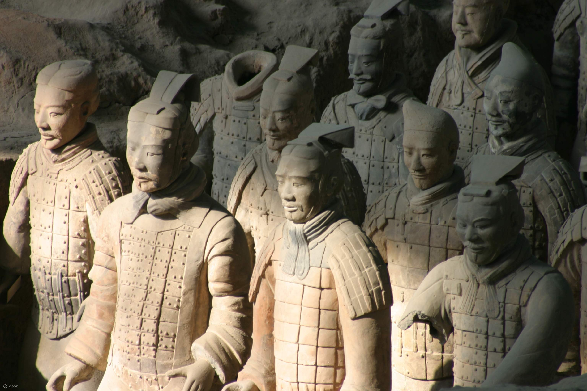

西安兵馬俑
秦始皇兵馬俑又稱秦始皇陵兵馬俑、秦陵兵馬俑，位於中國陝西省西安市臨潼區西陽村。
秦始皇陵建於公元前246年至公元前208年，歷時39年，是中國歷史上秦朝皇帝秦始皇的陵墓，也是中國第一個規模宏大、布局講究且保存完好的帝王陵寢，現
存陵冢高76米，陵園布置仿秦都咸陽，分內外兩城，內城周長2.5公里，外城周長6.3公里。陵冢位於內城西南，坐西面東，放置棺槨和隨葬器物的地方，為秦始
皇陵墓建築群的核心，目前尚未發掘完成。
據目前的考證，兵馬俑坑位於秦始皇陵封土以東約955.5米處，普遍認為兵馬俑位於秦始皇陵的外圍，有戍衛陵寢的含義，是秦始皇陵墓有機組成部分。
1987年，秦始皇陵墓及兵馬俑坑被聯合國教科文組織列入《世界遺產名錄》。
歷史事件
秦始皇即位後便開始興建自己的陵墓，修建過程經其一生。秦始皇陵墓總面積達到50平方公里，包括現在的秦兵馬俑和秦始皇陵。
秦始皇陵墓是世界上絕無僅有的帝陵。首先，各種原料來源要求嚴格，很多由專門工匠開採、加工。在建造過程中動用了大量人力、物力，有歷史學家認為最多
時有70萬人參加建設工程。
秦始皇陵墓兵馬俑並未在史籍上有所記載，故未被人知，也因此歷經二千餘年而能保存原貌。1974年3月29日陝西大旱，臨潼縣村民楊志發在挖井打水時意外發
現兵馬俑碎片，當時村民稱這些陶塑為「瓦爺」。在人們初次見到兵俑時，兵俑衣著、武器的顏色還十分鮮艷，非常好看，歷經兩千年威武不減；但是在考古學
家挖出土時，受空氣氧化影響，數分鐘內即漸漸剝落消失，只剩下一般大眾印象中的陶土色。1976年－1978年，考古隊增添了考古、保護、照相、修復等人員，
各項發掘工作全面開展。1979年10月1日，秦始皇兵馬俑博物館開始向國內外參觀者展出。
兵俑彩繪
實際上兵馬俑原漆有紫黑紅綠等十種顏色，但常出土與空氣接觸不到五分鐘即氧化剝落。2009年採用中德合作的彩繪保護技術成功將出土兵俑顏色留存下來；
在2015年日本NHK特集節目裡，經處理的殘留顏色兵俑，已可暴露於空氣中展示。當中尤其以「漢紫」（Han Purple）最受矚目，1950年代合成紫色出現前，
人們是用顏色調合方式配出紫色，然「漢紫」卻是人工合成的矽酸銅鋇顏料（BaCuSi2O6）。